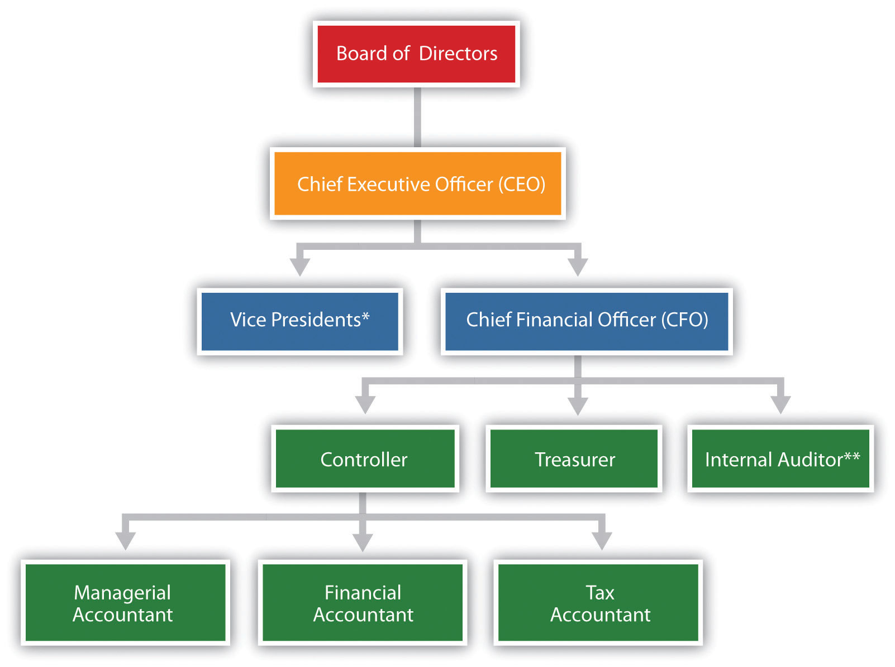
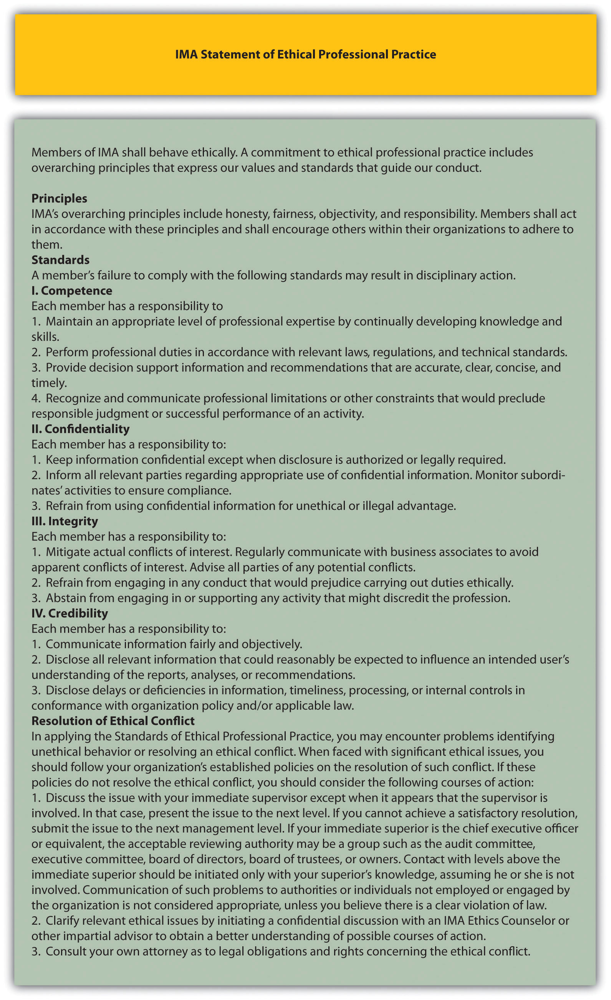
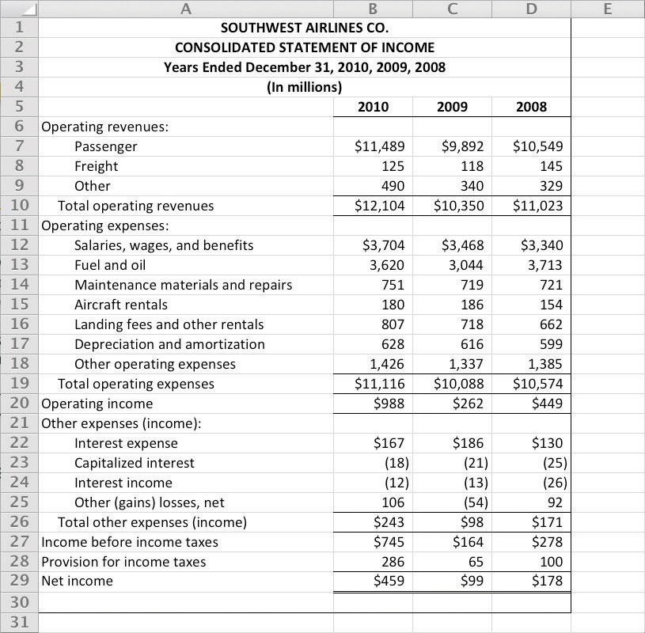
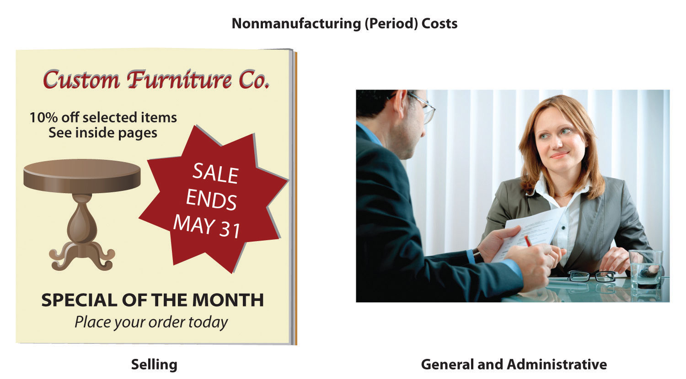
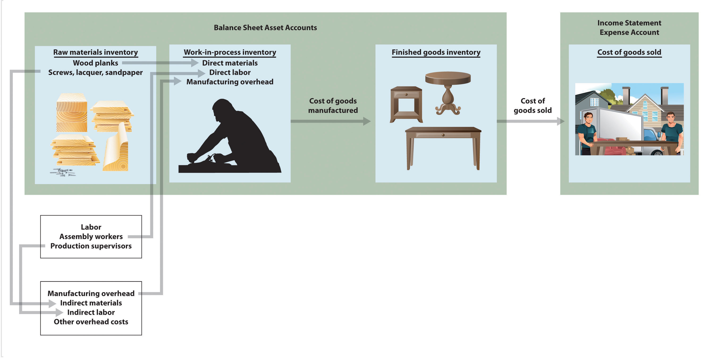

Dana Matthews is the president of Sportswear Company, a producer of hats and jerseys for fans of several professional sports teams. Imagine you are the accountant in charge of all accounting functions at Sportswear. Dana just reviewed the financial statements for the most recent fiscal year for the first time and has the following conversation with you:
| President (Dana): | I just reviewed our most recent financial statements, and I noticed we did not do as well as we had planned. I would like to look more closely at the profitability of each of our products to determine exactly what happened, but I don’t have this information in the financial statements. Is there a reason we don’t include this in the financial statements? |
| Accountant: | Yes, the financial statements are prepared following U.S. Generally Accepted Accounting Principles (U.S. GAAP) and are intended for outside users, such as owners, banks, and suppliers. U.S. GAAP does not require us to disclose profitability by product, and we prefer not to make this information public. Product profitability information stays in-house and is prepared by our managerial accountant, Dave Hicks. |
| President: | That makes sense. Can you have Dave pull together product profitability information for the past year so we can take a close look at which products are doing well and which are not? |
| Accountant: | You bet. We’ll have the information for you early next week. |
Question: The issue facing the president at Sportswear is a common one. Companies prefer not to disclose more information than is required by U.S. GAAP, but they would like to have more detailed information for internal decision-making and performance-evaluation purposes. This is why it is important to distinguish between financial and managerial accounting. What is the difference between information prepared by financial accountants and information prepared by managerial accountants?
Answer: Financial accountingProvides historical financial information to external users. focuses on providing historical financial information to external users. External users are those outside the company, including owners (e.g., shareholders) and creditors (e.g., banks or bondholders). Financial accountants reporting to external users are required to follow U.S. Generally Accepted Accounting Principles (U.S. GAAP)A set of accounting rules that must be followed to provide consistency in reporting financial information to external users., a set of accounting rules that requires consistency in recording and reporting financial information. This information typically summarizes overall company results and does not provide detailed information.
Managerial accountingFocuses on internal users, including executives, product managers, sales managers, and any other personnel in the organization who use accounting information for decision making. focuses on internal users—executives, product managers, sales managers, and any other personnel within the organization who use accounting information to make important decisions. Managerial accounting information need not conform with U.S. GAAP. In fact, conformance with U.S. GAAP may be a deterrent to getting useful information for internal decision-making purposes. For example, when establishing an inventory cost for one or more units of product (each jersey or hat produced at Sportswear Company), U.S. GAAP requires that production overhead costs, such as factory rent and factory utility costs, be included. However, for internal decision-making purposes, it might make more sense to include nonproduction costs that are directly linked to the product, such as sales commissions or administrative costs.
Question: It’s clear that financial accounting focuses on reporting to outside users while managerial accounting focuses on reporting to inside users. What specific characteristics would we expect to see in managerial accounting information?
Answer: Managerial accounting often focuses on making future projections for segments of a company. Suppose Sportswear Company is considering introducing a new line of coffee mugs with team logos on each mug. Management would certainly need detailed financial projections for sales, costs, and the resulting profits (or losses). Although historical financial accounting data from other product lines would be useful, preparing projections for the new line of mugs would be a managerial accounting function.
Another characteristic of managerial accounting data is its high level of detail. As noted in the opening dialogue between the president and accountant at Sportswear Company, the financial information in the annual report provides a general overview of the company’s financial results but does not provide any detailed information about each product. Information, such as product profitability, would come from the managerial accounting function.
Finally, managerial accounting information often takes the form of nonfinancial measures. For example, Sportswear Company might measure the percentage of defective products produced or the percentage of on-time deliveries to customers. This kind of nonfinancial information comes from the managerial accounting function.
Table 1.1 "Comparison of Financial and Managerial Accounting" summarizes the characteristics of both managerial and financial accounting.
Table 1.1 Comparison of Financial and Managerial Accounting
| Managerial Accounting | Financial Accounting | |
|---|---|---|
| Users | Inside the organization | Outside the organization |
| Accounting rules | None | U.S. Generally Accepted Accounting Principles (U.S. GAAP) |
| Time horizon | Future projections (sometimes historical if in detail) | Historical information |
| Level of detail | Often presents segments of an organization (e.g., products, divisions, departments) | Presents overall company information in accordance with U.S. GAAP |
| Performance measures | Financial and nonfinancial | Primarily financial |
Question: What did the president at Sportswear Company learn about product profitability from the information provided by the managerial accountant?
Answer: The president at Sportswear, Dana Matthews, learned that the hats product line was much more profitable than expected, accounting for 55 percent of the company’s profits even though initial estimates were that the hat segment would account for 40 percent of company profits. Conversely, the jerseys product line was much less profitable than expected, accounting for 45 percent of the company’s profits.
There are many issues associated with determining product profitability, including how to allocate costs that are not easily traced to each product and whether the product revenue and cost information is accurate enough to make important managerial decisions. These important issues will be addressed throughout the book.
For each report listed in the following, indicate whether it relates to financial or managerial accounting. Explain the reasoning behind your answer for each item.
Solution to Review Problem 1.1
The answers appear as follows. Be sure you explained your answers.
Question: Managers of most organizations continually plan for the future, and after the plan is implemented, managers assess whether they achieved their goals. What are the two functions that enable management to go through the process of continually planning and evaluating?
Answer: The two important functions that enable management to continually plan for the future and assess implementation are called planning and control. PlanningThe process of establishing goals and communicating these goals to employees of the organization. is the process of establishing goals and communicating these goals to employees of the organization. The controlThe process of evaluating whether the organization’s plans were effectively implemented. function is the process of evaluating whether the organization’s plans were implemented effectively.
Question: Continually planning for the future is an important quality of many successful organizations, such as Southwest Airlines (discussed in Note 1.11 "Business in Action 1.1"). How do organizations formalize their strategic plans?
Answer: Organizations formalize their plans by creating a budgetA series of reports used to quantify an organization’s plan for the future., which is a series of reports used to quantify an organization’s plans for the future. For example, Ernst & Young, an international accounting firm, plans for the future by establishing a budget indicating the labor hours required to perform specific services for each client. The process of creating a budget for each client enables the firm to plan for future staffing needs and communicate these needs to employees of the company. Rather than simply hoping it all works out in the end, Ernst & Young projects the labor hours required in the future, hires accounting staff based on these projections, and schedules the staff required for each client.
A budget can take a variety of forms. A budgeted income statement indicates a profit plan for the future. A capital budget shows the long-term investments planned for the future. A cash flow budget outlines cash inflows and outflows for the future. We provide more information about how budgets can be used for planning purposes in later chapters.
Plans for the Future
Review the annual report or 10K for just about any company, and you are likely to find information regarding plans for the future. Here are some examples:
As these companies go through the process of making decisions about the future, developing plans based on their decisions, and controlling the implementation of their plans, managerial accounting information will play a key role in all phases of the process.
Sources: Southwest Airlines, “Annual Report, 2010,” http://www.southwest.com; Sears Holdings Corporation, “10K Report, 2010,” http://www.searsholdings.com; Nordstrom, Inc., “10K Report, 2010,” http://www.nordstrom.com.
Question: Although planning for the future is important, plans are only effective if implemented properly. How do organizations assess the implementation of their plans?
Answer: The control function evaluates whether an organization’s plans were implemented effectively and often leads to recommendations for the future. Many organizations compare actual results with the initial plan (or budget) to evaluate performance of employees, departments, or the entire organization.
For example, assume Ernst & Young creates a budget indicating the labor hours needed to perform tax services for a particular client (this is the planning function). After the work is performed, actual labor hours used to complete the work are compared to budgeted labor hours. This analysis is then used to evaluate whether employees were able to complete the work within the budgeted time and often results in recommendations for the future. Recommendations might include the need for adding more labor hours to the budget or obtaining better support documents from the client.
Planning and controlling operations are critical functions within most organizations. In today’s business environment, effective planning and control by managers can be the key to survival.
Assume you are preparing a personal budget of all income and expenses for next month.
Solution to Review Problem 1.2
The planning function would involve establishing income and expense goals for next month. Possible sources of income include wages, scholarships, or student loans. Expenses might include rent, textbooks, tuition, food, entertainment, and transportation.
The control function occurs after the end of the month and involves comparing actual income and expenses with budgeted income and expenses. This allows for the evaluation of whether income and expense goals were achieved.
There are several benefits to using a planning and control process. The planning function establishes income and expense goals and helps to identify any deviations from these goals. For example, planned expenditures are clearly outlined in the budget and provide guidelines for making expenditure decisions throughout the month. Without clear guidelines, money might be spent on items that are not needed.
The control function allows for an evaluation of how well you met the goals established in the planning process. Perhaps some goals were achieved (e.g., food expenditures were close to what was budgeted) while other goals were not (e.g., transportation expenditures were higher than what was budgeted). The control function identifies these areas and leads to refined goals in the future. For example, the decision might be made to carpool next month to save on transportation costs or to earn more income to pay for transportation by working additional hours.
Question: From the previous discussion, we know that planning and control functions are often designed to evaluate the performance of employees and departments of an organization. This often includes employees overseeing financial information. Thus it is important to understand how most large companies organize their accounting and finance personnel. What are the accounting and finance positions within a typical large company, and what functions do they perform?
Answer: Let’s look at an example to answer this question. Suppose you are the president of Sportswear Company, mentioned earlier in the chapter, which produces hats and jerseys for fans of professional sports teams. Assume this is a large public company. (The term public companyA company whose shares of stock are publicly traded. refers to a company whose shares of stock are publicly traded—that is, the general investing public can purchase and sell ownership in the company.) As president of Sportswear, you ask the following questions:
The challenge is to determine who within Sportswear would be best suited to answer each of these questions. An organization chart will help in finding a solution.
Figure 1.1 "A Typical Organization Chart" is a typical organization chart; it shows how accounting and finance personnel fit within most companies. The personnel at the bottom of the chart report to those above them. For example, the managerial accountant reports to the controller. At the top of the chart are those who control the company, typically the board of directors (who are elected by the owners or shareholders). Review Figure 1.1 "A Typical Organization Chart" before moving on to the detailed discussion of each important finance and accounting position.
Figure 1.1 A Typical Organization Chart
*Represents vice presidents of various departments outside of accounting and finance such as production, personnel, and research and development.
**In addition to reporting to the chief financial officer, the internal auditor typically reports independently to the board of directors and/or the audit committee (made up of select members of the board of directors).
The chief financial officer (CFO)The person in charge of all finance and accounting functions within the organization. is in charge of all the organization’s finance and accounting functions and typically reports to the chief executive officer.
The controllerThe person responsible for managing the accounting staff that provides managerial accounting information used for internal decision making, financial accounting information for external reporting purposes, and tax accounting information to meet tax filing requirements. is responsible for managing the accounting staff that provides managerial accounting information used for internal decision making, financial accounting information for external reporting purposes, and tax accounting information to meet tax filing requirements. The three accountants the controller manages are as follows:
The treasurerThe person responsible for obtaining financing, projecting cash flow needs, and managing cash and short-term investments for the organization. reports directly to the CFO. A treasurer’s primary duties include obtaining sources of financing for the organization (e.g., from banks and shareholders), projecting cash flow needs, and managing cash and short-term investments.
An internal auditorThe person responsible for confirming that controls within the company are effective in ensuring accurate financial data. reports to the CFO and is responsible for confirming that the company has controls that ensure accurate financial data. The internal auditor often verifies the financial information provided by the managerial, financial, and tax accountants (all of whom report to the controller and ultimately to the CFO). If conflicts arise with the CFO, an internal auditor can report directly to the board of directors or to the audit committee, which consists of select board members.
Question: The organization chart in Figure 1.1 "A Typical Organization Chart" is intended to serve as a guide. However, all organizations are not the same, particularly smaller organizations. How might the organizational structure differ for a small organization?
Answer: Smaller organizations tend to have only one or two key finance and accounting personnel who perform the functions described previously. For example, one accountant might perform the financial and managerial accounting duties while another takes care of the tax work (or the tax work might be contracted out to a tax firm). Instead of employing its own internal auditor, an organization might hire one from an outside consulting firm. Some organizations may not have a CFO, or they may have a CFO but not a controller. An organization’s structure depends on many different factors, including its size and reporting requirements, as indicated in the Note 1.23 "Business in Action 1.2".
The Organizational Structure of a Not-for-Profit Symphony
Financial limitations prevent a small not-for-profit symphony in California from hiring full-time finance and accounting employees. In spite of having annual revenues approaching $200,000, all financial transactions are processed and recorded by a part-time bookkeeper hired by the symphony. The bookkeeper also inputs budget information and provides monthly financial reports to the treasurer. The treasurer, a volunteer member of the board of directors, is responsible for establishing the annual budget and providing monthly financial reports to the board of directors. An outside firm prepares and processes all tax filings, assembles annual financial statements, and performs a review of the accounting operations at the end of each fiscal year.
Notice how the symphony does not have any of the formal positions identified in Figure 1.1 "A Typical Organization Chart", with the exception of the treasurer. This illustrates how financial constraints and reporting requirements may require an organization to be creative in establishing its organizational structure.
For each of the six questions listed at the beginning of this section for Sportswear Company, determine who within the company would be responsible for providing the appropriate information. Assume Sportswear has the same organizational structure as the one shown in Figure 1.1 "A Typical Organization Chart".
Solution to Review Problem 1.3
Imagine you are the accountant for Drive Write, a company that produces computer disk drives, and you are in charge of all accounting functions within the company. The president has informed you that if the company’s profits grow by 20 percent this year, you will receive a $20,000 bonus, and she will receive a $50,000 bonus. No bonuses will be awarded if profit growth is less than 20 percent. Because the company’s profits have grown 20 percent annually for the last 10 years, investors have come to expect significant growth from one year to the next. Near the end of this fiscal year, the president and you have the following conversation:
| President: | We are awfully close to hitting our numbers and getting to the 20 percent target. With two weeks remaining, projections show we will come in at 18 percent for the year. What can we do on the accounting side to increase current year profits? |
| Accountant: | Well, I’m not sure there is anything we can do. Our accounting is squeaky clean, as confirmed by our independent auditors. Perhaps our sales will improve next year. |
| President: | There has to be something we can do—I could sure use the bonus money, and our investors would appreciate an increase in their investment! I know we have a large customer order to be filled the first week of next year. Why not include that sale in this year’s numbers? |
| Accountant: | I’m not comfortable recording sales in the wrong fiscal year. |
| President: | We’re only talking about moving sales by a few days! I would like you to consider this carefully. If you can’t do this, I may have to find an accountant who can! Let’s talk about our options later this week. |
Question: The situation at Drive Write creates a serious ethical dilemma. (The Drive Write example is based on a real company called MiniScribe Corporation, subsequently purchased by a competitor.) Companies are constantly under pressure to meet sales and profit goals. Employees who succeed in meeting these goals often reap huge monetary rewards; those who fail may be penalized with lower pay or may even lose their jobs. What would you do if asked to record information in a way that distorts the company’s financial results?
Answer: As the accountant for Drive Write, your response to the president’s request would likely affect your reputation as a professional and your future as an accountant. The unethical behavior at corporations like Xerox, Enron, and WorldCom in recent years makes it imperative that we know both how to act ethically and how to resolve ethical conflicts.
To help guide accounting professionals through ethical dilemmas like the one at Drive Write, the Institute of Management Accountants (IMA) has established a Statement of Ethical Professional Practice, which appears in Figure 1.2 "IMA Statement of Ethical Professional Practice". The standards outlined in this statement are guidelines that can help accountants choose an ethically acceptable course of action. As you review Figure 1.2 "IMA Statement of Ethical Professional Practice", notice that the IMA specifies four core responsibilities (competence, confidentiality, integrity, and credibility) as well as guidelines on how to resolve ethical conflicts. The “Resolution of Ethical Conflict” section provides specific guidance on how to resolve the conflict at Drive Write.
Figure 1.2 IMA Statement of Ethical Professional Practice
Source: Adapted from the Institute of Management Accountants, http://www.imanet.org.
Question: The IMA is just one of many professional accounting organizations. Do other professional accounting organizations also provide guidance regarding ethics in accounting?
Answer: Yes, other professional organizations do provide ethical guidance. Several are listed as follows:
Because of alleged wrongdoing, such as that reported in the Note 1.27 "Business in Action 1.3", improving ethics is a top priority for most businesses as shown in the Note 1.28 "Business in Action 1.4". As a result, professional organizations like those we have cited have become instrumental in providing ethical guidelines.
Production Firm Employees Charged with Fraud
The Securities and Exchange Commission (SEC) filed three actions against Diebold, Inc., a manufacturer and seller of automated teller machines, for improperly inflating earnings over a five-year period. Three former employees—the CFO, controller, and director of accounting—were accused of improperly inflating revenue on factory orders, improperly recognizing revenue on a lease transaction, manipulating reserves and accruals, improperly capitalizing expenses, and improperly increasing the value of inventory. These actions allegedly resulted in over 40 misstated annual, quarterly, and other reports filed with the SEC, along with numerous inaccurate press releases.
The company agreed to pay a $25,000,000 civil penalty, and the three former employees remain in litigation. Although the CEO was not accused of wrongdoing, he settled with the SEC and agreed to pay back cash bonuses, stock, and stock options received during the periods when the financial fraud was committed.
Source: Securities and Exchange Commission, “SEC Charges Diebold and Former Executives with Accounting Fraud,” news release, June 2, 2010.
The Code of Ethics at Home Depot and Hewlett-Packard
Ethics policies are becoming increasingly important to organizations. Home Depot, Inc., has an ethics code that “provides the basic principles for associates to make business decisions consistent with how Home Depot operates” and “forms the groundwork for our ethical behavior.”
Hewlett-Packard Company has established “business ethics guided by enduring values.” The company states it is committed to the following principles: honesty, excellence, responsibility, compassion, citizenship, fairness, and respect.
Sources: Home Depot, “Home Page,” http://www.homedepot.com; Hewlett-Packard, “Home Page,” http://www.hp.com.
Solution to Review Problem 1.4
The four key standards shown in Figure 1.2 "IMA Statement of Ethical Professional Practice" are outlined as follows:
Several options exist for resolving ethical conflicts. The IMA suggests the following courses of action:
Question: Many companies today are growing out of their accounting systems. In the old days, accounting systems were designed primarily to track daily transactions and provide reports to external users on a monthly, quarterly, or annual basis. But times have changed, and companies now need more information internally to make good decisions. Accounting systems are currently used for both external reporting (financial accounting) and internal reporting (managerial accounting). Even relatively small accounting packages, such as QuickBooks and Peachtree, provide features that are important for managerial accounting. However, most agree that no single accounting system will meet the needs of every organization and that two important factors must be considered when choosing a system. What are the two factors that must be considered when deciding on an accounting system?
Answer: The two factors are (1) the size of the organization and (2) the information needs of the organization. Each factor is discussed next.
Accounting software is designed to serve different-sized companies. The size of a company is commonly measured in sales revenue. Experts express varying opinions on what constitutes a small, midsized, or large company. Some believe that small companies have sales up to $10,000,000, midsized companies have sales up to $100,000,000, and large companies have sales greater than $100,000,000. Others prefer different amounts. Regardless of the number used, the goal is to find an accounting system that best meets the needs of the organization, and the size of the organization plays a big part in finding the best-fitting system.
Before selecting an accounting system, an organization must determine its accounting needs. Some organizations simply need the equivalent of a check register, which provides easy tracking of expense codes as checks are issued and makes bank reconciliations a snap. Other organizations require more than a check register; they may demand a system that can create invoices, process payroll, and track inventory. More complex organizations will want the ability to perform more advanced functions. Such organizations might need to customize reports (e.g., create an income statement by division or customer), modify input screens, send financial reports via e-mail, export reports to spreadsheet software such as Excel, and create reports with graphics (e.g., tables, pie charts, and line charts).
Question: Clearly the size and information needs of a company will drive the selection of an accounting system for the company. As the need for accounting data has become more complex, accounting systems have been developed that perform a wide variety of tasks. These systems are called enterprise resource planning systems. What is an enterprise resource planning system, and how does this system help companies utilize accounting data?
Answer: Enterprise resource planning (ERP)A system designed to record and share information across functional and geographical areas to meet the needs of internal and external users. systems are designed to record and share information across functional areas (e.g., accounting, marketing, human resources, and shipping) and across geographical areas (e.g., from a sales office in California to headquarters in Hong Kong). ERP systems continually update information to provide real-time data to all users, and the data can be organized in different formats to meet the needs of internal and external users. For example, in his book Onward, Howard Schultz describes how as CEO of Starbucks he reviews comparative financial data for Starbucks stores daily. This information comes from the ERP system at Starbucks.
The idea behind ERP software, and a central theme in managerial accounting, is that accurate and up-to-date financial information will help organizations make better decisions. Better decisions typically lead to improvements in profitability, efficiency, and customer satisfaction.
ERP systems are expensive. Annual costs for large organizations can easily exceed $10,000,000. However, smaller systems for midsized companies are available at a much lower cost. Most ERP software is offered in modules for functional accounting areas, such as accounts receivable, accounts payable, payroll, inventory, and job costing. The more modules included, the higher the cost will be. Popular makers of ERP systems include Microsoft, Oracle, and SAP Corporation.
In deciding whether to upgrade to an ERP system, organizations must be sure that the benefits of using the data from a new system outweigh the costs of implementing the system. If management does not intend to use the information to improve planning and decision making, then going with a less sophisticated accounting system may be the better approach.
Question: ERP systems commonly provide a means to download data to spreadsheets for further analysis. How can spreadsheet software help us to analyze financial information?
Answer: Since managers make extensive use of spreadsheets to organize and analyze data, most computerized accounting systems are designed to export data to spreadsheet software programs such as Excel. For example, Figure 1.3 "Excel Spreadsheet for Southwest Airlines" shows how a spreadsheet was used to import data directly from Southwest Airlines’ 2010 annual report. This allows the user to analyze the data more easily. Notice that in Figure 1.3 "Excel Spreadsheet for Southwest Airlines" the total operating revenue increased over the three years shown. We could use Excel to quickly determine the exact percentage increase from 2008 to 2009 and from 2009 to 2010.
Figure 1.3 Excel Spreadsheet for Southwest Airlines

Question: Let’s assume you are asked to prepare an income statement showing revenue and expense projections for next year. How might you use Excel to prepare your projections?
Answer: You could start by exporting this year’s results from the accounting system to an Excel spreadsheet. Then you could set up a new column to show estimates for next year. You would likely discuss different aspects of the income statement with various personnel in the organization—making changes as you go—before finalizing your projections.
Imagine the work involved if you did not use a computer but instead had to write the information down by hand. If there were any changes to the information, you would have to make time-consuming calculations, and once the data were finalized, you would be faced with the manual preparation of formal reports. With the relatively recent advances in business technology, the days of preparing information manually are over. Most organizations require their accounting and finance personnel to have advanced computer spreadsheet skills. Our goal is to provide you with an opportunity to use spreadsheets in a way that mirrors the real world.
Assume you are the CFO for an electronics consulting firm with annual revenues of $30,000,000 and annual profit of $5,000,000. The current accounting system is used for basic functions, such as issuing checks, creating invoices, and processing payroll. The company is considering upgrading its accounting system by purchasing an ERP system. Describe the factors to be considered by the company in making this decision.
Solutions to Review Problem 1.5
This company is a midsized company with $30,000,000 in revenues, although some would argue that this is a small company. Going to an ERP system is probably not appropriate if management is simply looking for a few reports beyond what most financial accounting systems can provide.
If management has a need for more detailed and complex financial information—other than processing checks, invoices, and payroll—then a low-end ERP system might be appropriate. However, the benefits derived from such a system must outweigh the costs.
Question: Much of what we discuss in this book relates to companies that manufacture products, such as Nike and Apple, and terminology is a key component of accounting for manufacturing companies. The challenge is in classifying costs correctly for items such as production materials, production labor, marketing department labor, rent for production facilities, and rent for the administrative services facilities. These costs must be classified accurately so that they appear correctly in company financial reports. The starting point for learning how to classify costs correctly is in understanding two broad categories of costs. What are the two broad terms used to categorize cost information in a manufacturing setting?
Answer: The two broad categories of costs are manufacturing costs and nonmanufacturing costs. Each category is described in detail as follows.
All costs related to the production of goods are called manufacturing costsAll costs related to the production of goods; also called product costs.; they are also referred to as product costsAll costs related to the production of goods; also called manufacturing costs.. A manufacturer purchases materials, employs workers who use the materials to assemble the goods, provides a building where the materials are stored and goods are assembled, and sells the goods. We classify the costs associated with these activities into three categories: direct materials, direct labor, and manufacturing overhead.
To help clarify which costs are included in these three categories, let’s look at a furniture company that specializes in building custom wood tables called Custom Furniture Company. Each table is unique and built to customer specifications for use in homes (coffee tables and dining room tables) and offices (boardroom and meeting room tables). The sales price of each table varies significantly, from $1,000 to more than $30,000. Figure 1.4 "Direct Materials, Direct Labor, and Manufacturing Overhead at Custom Furniture Company" shows examples of production activities at Custom Furniture Company for each of the three categories (we continue using this company as an example in Chapter 2 "How Is Job Costing Used to Track Production Costs?").
Question: Raw materials used in the production process that are easily traced to the product are called direct materialsRaw materials used in the production process that are easily traced to the product.. What materials used in the production process at Custom Furniture would be classified as direct materials?
Answer: The wood used to build tables and the hardware used to attach table legs would be considered direct materials. Small, inexpensive items like glue, nails, and masking tape are typically not included in direct materials because the cost of tracing these items to the product outweighs the benefit of having accurate cost data. These minor types of materials, often called supplies or indirect materials, are included in manufacturing overhead, which we define later.
Question: Workers who convert materials into a finished product and whose time is easily traced to the product are called direct laborLabor performed by workers who convert materials into a finished product and whose time is easily traced to the product.. Who represents direct labor at Custom Furniture?
Answer: Direct labor would include the workers who use the wood, hardware, glue, lacquer, and other materials to build tables.
Question: All costs associated with the production process other than direct material costs and direct labor costs are called manufacturing overheadAll costs associated with the production process other than direct material costs and direct labor costs.. Terms synonymous with manufacturing overhead include factory overhead, factory burden, and overhead. What items are included in manufacturing overhead?
Answer: Manufacturing overhead consists of the following:
Table 1.2 "Manufacturing Costs at Custom Furniture Company" provides several examples of manufacturing costs at Custom Furniture Company by category.
Table 1.2 Manufacturing Costs at Custom Furniture Company
| Direct Materials |
|
| Direct Labor |
|
| Manufacturing Overhead |
|
Note 1.43 "Business in Action 1.5" details the materials, labor, and manufacturing overhead at a company that has been producing boats since 1968.
Photo courtesy of Brian Miller, http://www.flickr.com/photos/13233728@N00/5155012186/
Manufacturing Costs at MasterCraft
MasterCraft produces boats for water skiers and wake boarders. Each boat produced incurs significant manufacturing costs. MasterCraft records these manufacturing costs as inventory on the balance sheet until the boats are sold, at which time the costs are transferred to cost of goods sold on the income statement.
Examples of direct materials for each boat include the hull, engine, transmission, carpet, gauges, seats, windshield, and swim platform. Examples of indirect materials (part of manufacturing overhead) include glue, paint, and screws. Direct labor includes the production workers who assemble the boats and test them before they are shipped out. Indirect labor (part of manufacturing overhead) includes the production supervisors who oversee production for several different boats and product lines.
Manufacturing overhead includes the indirect materials and indirect labor mentioned previously. Other manufacturing overhead items are factory building rent, maintenance and depreciation for production equipment, factory utilities, and quality control testing.
Source: MasterCraft, “Home Page,” http://www.mastercraft.com.
Costs that are not related to the production of goods are called nonmanufacturing costsCosts that are not related to the production of goods; also called period costs.; they are also referred to as period costsCosts that are not related to the production of goods; also called nonmanufacturing costs.. These costs have two components—selling costs and general and administrative costs—which are described next. Examples of nonmanufacturing costs appear in Figure 1.5 "Examples of Nonmanufacturing Costs at Custom Furniture Company".
Question: Costs incurred to obtain customer orders and provide customers with a finished product are called selling costsCosts incurred to obtain customer orders and provide customers with a finished product.. (They are also often called marketing costs or selling and advertising costs.) What activities would be classified as selling costs at Custom Furniture?
Answer: Examples of selling costs include advertising, sales commissions, salaries for marketing and advertising personnel, office space for marketing and advertising personnel, finished goods storage costs, and shipping costs paid by the seller for products shipped to customers.
Question: Costs related to the overall management of an organization are called general and administrative costsCosts related to the overall management of an organization.. What activities would be classified as general and administrative costs at Custom Furniture?
Answer: Examples include personnel and support staff in the following areas: accounting, human resources, legal, executive, and information technology. Depreciation of office equipment and buildings associated with these areas would also be included as general and administrative costs. General and administrative costs are often simply called administrative costs.
Figure 1.5 Examples of Nonmanufacturing Costs at Custom Furniture Company
Although selling costs and general and administrative costs are considered nonmanufacturing costs, managers often want to assign some of these costs to products for decision-making purposes. For example, sales commissions and shipping costs for a specific product could be assigned to the product. This does not comply with U.S. GAAP because, under U.S. GAAP, only product costs can be assigned to products. However, as we noted earlier, managerial accounting information is tailored to meet the needs of the users and need not follow U.S. GAAP.
Distinguishing between manufacturing and nonmanufacturing costs is not always simple. For example, if legal staff works on an issue associated with production personnel and if human resources staff hires assembly line workers, are the costs involved manufacturing or nonmanufacturing costs? It is up to each organization to determine how to handle such costs for product costing purposes. The advantage of managerial accounting over financial accounting is that costs can be organized in any manner that helps managers make decisions. However, in this chapter, to avoid ambiguity, we follow the definitions provided by U.S. GAAP.
Question: At this point, you should be able to distinguish between manufacturing costs and nonmanufacturing costs. Why is it important to make this distinction?
Answer: Distinguishing between the two categories is critical because the category determines where a cost will appear in the financial statements. All manufacturing costs (direct materials, direct labor, and manufacturing overhead) are attached to inventory as an asset on the balance sheet until the goods are sold, at which point the costs are transferred to cost of goods sold on the income statement as an expense. As we indicated earlier, nonmanufacturing costs are also called period costs; that is because they are expensed on the income statement in the time period in which they are incurred.
Table 1.3 "Manufacturing Versus Nonmanufacturing Costs" clarifies the relationship between manufacturing and nonmanufacturing costs. It also describes the point at which these costs are recorded as expenses on the income statement. (Remember that the terms manufacturing cost and product cost are interchangeable, as are the terms nonmanufacturing cost and period cost.)
Table 1.3 Manufacturing Versus Nonmanufacturing Costs
| Manufacturing Costs (Also Called Product Costs) | Nonmanufacturing Costs (Also Called Period Costs) |
|---|---|
|
|
| Timing of expense: Costs are expensed when goods are sold. | Timing of expense: Costs are expensed during the time period incurred. |
Note 1.48 "Business in Action 1.6" provides examples of nonmanufacturing costs at PepsiCo, Inc.
Source: Photo courtesy of JeffBedord, http://www.flickr.com/photos/jeffbedford/6218820224/in/photostream/.
Nonmanufacturing Costs at PepsiCo
PepsiCo, Inc., produces more than 500 products under several different brand names, including Frito-Lay, Pepsi-Cola, Gatorade, Tropicana, and Quaker. Net sales for 2010 totaled $57,800,000,000, resulting in operating profits of $6,300,000,000. Cost of sales represented the highest cost on the income statement at $26,600,000,000. The second highest cost on the income statement—selling and general and administrative expenses—totaled $22,800,000,000. These expenses are period costs, meaning they must be expensed in the period in which they are incurred.
Examples of selling costs for PepsiCo include television advertising (probably the biggest piece of the $22,800,000,000), promotional coupons, costs of shipping products to customers, and salaries of marketing and advertising personnel.
Examples of general and administrative costs include salaries and bonuses of top executives and the costs of administrative departments, including personnel, accounting, legal, and information technology.
Source: PepsiCo, “PepsiCo 2010 Annual Report,” http://www.pepsico.com.
The following manufacturing items are for a construction company working on several custom homes. Identify whether each item should be categorized as direct materials, direct labor, or manufacturing overhead.
Identify whether each item in the following should be categorized as a product (manufacturing) cost or as period (nonmanufacturing) cost. Also indicate whether the cost should be recorded as an expense when the cost is incurred or as an expense when the goods are sold.
Solution to Review Problem 1.6
Question: Custom Furniture Company’s direct materials include items such as wood and hardware. Direct labor involves the employees who build the custom tables. Manufacturing overhead includes items such as indirect materials (glue, screws, nails, sandpaper, and stain), indirect labor (production supervisor), and other manufacturing costs, such as factory equipment maintenance and factory utilities. What accounts are used to record the costs associated with these items, and where do these accounts appear in the financial statements?
Answer: All the costs mentioned previously for Custom Furniture are product costs (also called manufacturing costs). Product costs are recorded as an asset on the balance sheet until the products are sold, at which point the costs are recorded as an expense on the income statement. To record product costs as an asset, accountants use one of three inventory accounts: raw materials inventory, work-in-process inventory, or finished goods inventory. The account they use depends on the product’s level of completion. They use one expense account—cost of goods sold—to record the product costs when the goods are sold.
Table 1.4 "Accounts Used to Record Product Costs" summarizes the accounts used to track product costs. Figure 1.6 "Flow of Product Costs through Balance Sheet and Income Statement Accounts" shows how product costs flow through the balance sheet and income statement. Lastly, Note 1.57 "Business in Action 1.7" provides an example of how the accounts shown in Table 1.4 "Accounts Used to Record Product Costs" and Figure 1.6 "Flow of Product Costs through Balance Sheet and Income Statement Accounts" appear in financial statements. Take time to review these items carefully. Your understanding of them will help clarify how product costs flow through the accounts and where product costs appear in the financial statements. The following discussion provides further clarification.
Question: What is the difference between raw materials inventory, work-in-process inventory, and finished goods inventory?
Answer: Each of these accounts is used to record product costs depending on where the product is in the production process, and each account is an asset account on the balance sheet.
The raw materials inventoryAn account used to record the cost of materials not yet put into production. account records the cost of materials not yet put into production. For Custom Furniture Company, this account includes items such as wood, brackets, screws, nails, glue, lacquer, and sandpaper.
The work-in-process (WIP) inventoryAn account used to record costs associated with products in the production process that are not yet complete. account records the costs of products that have not yet been completed. Suppose Custom Furniture Company has eight tables that are still in production at the end of the year. All manufacturing costs associated with these incomplete eight tables—direct materials, direct labor, and manufacturing overhead—are included in the WIP inventory account.
Once goods in WIP inventory are completed, they are transferred into finished goods inventory. The cost of completed goods that are transferred out of WIP inventory into finished goods inventory is called the cost of goods manufacturedThe cost of completed goods transferred from work-in-process inventory into finished goods inventory..
The finished goods inventoryAn account used to record the manufacturing costs associated with products that are completed and ready to sell. account records the manufacturing costs of products that are completed and ready to sell. Suppose Custom Furniture Company has five completed tables at the end of the year (in addition to the eight partially completed tables in work-in-process inventory). The manufacturing costs of these five tables—direct materials, direct labor, and manufacturing overhead—are included in the finished goods inventory account until the tables are sold. (For the purposes of this example, assume the tables are “sold” when delivered to the customer.)
Question: The costs of materials not yet put into production are included in raw materials inventory. The costs associated with products that are not yet complete are included in WIP inventory. And the costs associated with products that are completed and ready to sell are included in finished goods inventory. What happens to the product costs in finished goods inventory when the products are sold?
Answer: When completed goods are sold, their costs are transferred out of finished goods inventory into the cost of goods soldAn expense account on the income statement that represents the product costs for all goods sold during the period. account. Cost of goods sold is an expense account on the income statement that represents the product costs of all goods sold during the period.
For example, suppose Custom Furniture Company sells one table that cost $3,000 to produce (i.e., direct materials, direct labor, and manufacturing overhead costs incurred to produce the table total $3,000). The $3,000 cost is in finished goods inventory until the entry is made to record the sale, at which time finished goods inventory is reduced by $3,000 (the table is no longer in inventory) and cost of goods sold is increased by $3,000.
Table 1.4 Accounts Used to Record Product Costs
| Account Name | Description | Financial Statement |
|---|---|---|
| Raw materials inventory | Cost of unused production materials | Balance sheet (asset) |
| Work-in-process inventory | Cost of incomplete products | Balance sheet (asset) |
| Finished goods inventory | Cost of completed products not yet sold | Balance sheet (asset) |
| Cost of goods sold | Cost of products sold | Income statement (expense) |
Figure 1.6 Flow of Product Costs through Balance Sheet and Income Statement Accounts
Source: Photo courtesy of Matthew Rutledge, http://www.flickr.com/photos/rutlo/4252743250//.
Presentation of Product Costs at Advanced Micro Devices
Advanced Micro Devices (AMD), a producer of microprocessors and flash memory devices for personal and networked computers, has annual revenues of $6,500,000,000. A summarized version of AMD’s balance sheet appears as follows (all amounts are in millions). Notice that three inventory accounts, totaling $632,000,000, support the total inventory amount that appears in the asset section of the balance sheet. The raw materials inventory account ($28,000,000) is used to record the cost of materials not yet put into production. The work-in-process inventory account ($441,000,000) is used to record costs associated with microprocessors and flash memory devices in the production process that are not yet complete. The finished goods inventory account ($163,000,000) is used to record the product costs associated with AMD’s products that are completed and ready to sell.
When AMD sells finished goods, the cost of these goods is transferred out of finished goods inventory into the cost of goods sold account, which this company calls cost of sales, as many companies do. The operating portion of AMD’s income statement follows—again, all amounts are in millions. Notice that cost of sales appears below net sales and above all other operating expenses.
Source: Advanced Micro Devices, “Advanced Micro Devices 2010 Annual Report,” http://www.amd.com.
Match each of the following accounts with the appropriate description that follows.
Solutions to Review Problem 1.7
| Raw materials inventory | 4. Used to record cost of materials not yet put into production. |
| Work-in-process inventory | 3. Used to record product costs associated with incomplete goods in the production process. |
| Finished goods inventory | 1. Used to record product costs associated with goods that are completed and ready to sell. |
| Cost of goods sold | 2. Used to record product costs associated with goods that are sold. |
Question: Companies that provide services, such as Ernst & Young (accounting) and Accenture LLP (consulting), do not sell goods and therefore have no inventory. The accounting process and income statement for service companies are relatively simple. Merchandising companies (also called retail companies) like Macy’s and Home Depot buy and sell goods but typically do not manufacture goods. Since merchandising companies must account for the purchase and sale of goods, their accounting systems are more complex than those of service companies. Manufacturing companies, such as Johnson & Johnson and Honda Motor Company, produce and sell goods. Such companies require an accounting system that goes well beyond accounting solely for the purchase and sale of goods. Why are accounting systems more complex for manufacturing companies?
Answer: Accounting systems are more complex for manufacturing companies because they need a system that tracks manufacturing costs throughout the production process to the point at which goods are sold. Since income statements for manufacturing companies tend to be more complex than for service or merchandising companies, we devote this section to income statements for manufacturing companies. Understanding income statements in a manufacturing setting begins with the inventory cost flow equation.
Question: How do companies use the cost flow equation to calculate unknown balances?
Answer: We can use the basic cost flow equation to calculate unknown balances for just about any balance sheet account (e.g., cash, accounts receivable, and inventory). The equation is as follows:
We will apply this equation to the three inventory asset accounts discussed earlier (raw materials, work in process, and finished goods) to calculate the cost of raw materials used in production, cost of goods manufactured, and cost of goods sold.
Raw materials used in production shows the cost of direct and indirect materials placed into the production process. Cost of goods manufactured represents the cost of goods completed and transferred out of work-in-process (WIP) inventory into finished goods inventory. Cost of goods sold represents the cost of goods that are sold and transferred out of finished goods inventory into cost of goods sold.
Accountants need all these amounts—raw materials placed in production, cost of goods manufactured, and cost of goods sold—to prepare an income statement for a manufacturing company. We describe how to calculate these amounts using three formal schedules in the following order:
Question: The basic cost flow equation can be used in three supporting schedules to help us determine the cost of goods sold amount on the income statement for manufacturing companies. What information is included in these schedules, and what do they look like for Custom Furniture Company?
Answer: Figure 1.7 "Income Statement Schedules for Custom Furniture Company" shows these three schedules for Custom Furniture Company for the month of May. As you review these schedules, note that each schedule provides information required for the next schedule, as indicated by the arrows. Remember the inventory cost flow equation is used for each schedule. This is why you see abbreviations for each element of the equation: beginning balance (BB), transfers in (TI), ending balance (EB), and transfers out (TO).
The goal of going through the process shown in Figure 1.7 "Income Statement Schedules for Custom Furniture Company" is to arrive at a cost of goods sold amount, which is presented on the income statement. Custom Furniture Company’s income statement for the month ended May 31 is shown in Figure 1.8 "Income Statement for Custom Furniture Company". As you review Figure 1.7 "Income Statement Schedules for Custom Furniture Company" and Figure 1.8 "Income Statement for Custom Furniture Company", look back at Figure 1.6 "Flow of Product Costs through Balance Sheet and Income Statement Accounts" to see how costs flow through the three inventory accounts and the cost of goods sold account.
In Chapter 2 "How Is Job Costing Used to Track Production Costs?", we provide the detailed information necessary to prepare the schedules and income statement presented in Figure 1.7 "Income Statement Schedules for Custom Furniture Company" and Figure 1.8 "Income Statement for Custom Furniture Company". At this point, your job is to understand how we use the inventory cost flow equation to calculate raw materials placed in production, cost of goods manufactured, and cost of goods sold. (Note: Companies using a perpetual inventory system do not necessarily prepare these formal schedules because perpetual systems update records immediately when inventory is transferred from one inventory account to another. However, these companies take a physical count periodically to ensure the accuracy of inventory accounts and use the cost flow equation and similar schedules to ensure their perpetual system balances are accurate. Note 1.62 "Business in Action 1.8" shows how the cost flow equation can be used to analyze the effects of fraud that was allegedly committed at Rite Aid.)
Figure 1.7 Income Statement Schedules for Custom Furniture Company

a From the company’s balance sheet at April 30 (April 30 ending balance is the same as May 1 beginning balance).
b From the company’s balance sheet at May 31.
c This is actual manufacturing overhead for the period and includes indirect materials, indirect labor, factory rent, factory utilities, and other factory-related expenses for the month. In Chapter 2 "How Is Job Costing Used to Track Production Costs?", we look at an alternative approach to recording manufacturing overhead called normal costing.
Figure 1.8 Income Statement for Custom Furniture Company

*$135,000 comes from the schedule of cost of goods sold in Figure 1.7 "Income Statement Schedules for Custom Furniture Company".
Using the Cost Flow Equation to Analyze Fraud
Rite Aid Corporation operates 3,400 drug stores in the United States. In 2002, the Securities and Exchange Commission (SEC) filed accounting fraud charges against several former executives of Rite Aid. The SEC complaint alleged that Rite Aid had significantly overstated income for several years.
According to the complaint, Rite Aid executives committed financial fraud in several areas, one of which involved inventory. At the end of the company’s fiscal year, the physical inventory count showed $9,000,000 less than Rite Aid’s inventory balance on the books, presumably due to physical deterioration of the goods or theft. Rite Aid executives allegedly failed to record this shrinkage, thereby overstating ending inventory on the balance sheet and understating cost of goods sold on the income statement.
Using the cost flow equation, you can see how failing to record the $9,000,000 loss would understate cost of goods sold.

By failing to record the inventory loss, Rite Aid overstated inventory (an asset) on the balance sheet by $9,000,000 and understated cost of goods sold (an expense) by $9,000,000 on the income statement. This ultimately increased profit by $9,000,000 because reported expenses were too low.
This inventory fraud was a relatively small part of the fraud allegedly committed by Rite Aid executives. In fact, Rite Aid’s net income was restated downward by $1,600,000,000 in 2002. Several former executives pled guilty to conspiracy charges. The former chief executive, Martin Grass, was sentenced to eight years in prison and the former chief financial officer, Franklyn Bergonzi, was sentenced to 28 months in prison. Rite Aid’s stock fell from a high of $50 per share to $5 per share in 2003.
Sources: Securities and Exchange Commission, “Release 2002–92,” news release, http://www.sec.gov; AP wires dated July 10, 2003, and May 27, 2004.
Question: Manufacturing companies clearly have more complex accounting systems to account for all the costs involved in producing products. However, the income statement for a manufacturing company is not all that much different than the income statement for a merchandising company. What are primary differences between manufacturing and merchandising company income statements?
Answer: The primary differences are as follows:
Table 1.5 "Income Statement Terminology in Manufacturing and Merchandising Companies" summarizes the differences in income statement terminology between manufacturing companies and merchandising companies.
Table 1.5 Income Statement Terminology in Manufacturing and Merchandising Companies
| The following terms are used by manufacturing and merchandising companies: sales, cost of goods available for sale, cost of goods sold, operating expenses, selling, general and administrative, and operating profit. | |
| Finished goods inventory is used by manufacturing companies. | Merchandise inventory is used by merchandising companies. |
| Cost of goods manufactured is used by manufacturing companies. | Net purchases is used by merchandising companies. |
Figure 1.9 "Merchandising Company Income Statement for Fashion, Inc." presents an income statement for Fashion, Inc., a retail company that sells clothing. Notice that the schedule of cost of goods manufactured (and related schedule of raw materials placed in production) is not needed for merchandising companies, and the terms merchandise inventory and net purchases are used instead of finished goods inventory and cost of goods manufactured. Also, the schedule of cost of goods sold is simply included in the income statement. Many companies prefer this approach because it means they do not have to prepare a separate schedule.
Figure 1.9 Merchandising Company Income Statement for Fashion, Inc.

Three schedules are necessary to prepare an income statement for a manufacturing company, in the following order:
Fine Cabinets, Inc., produces custom cabinets. The following inventory balances appeared on its balance sheet. (Note that the most current financial information is presented in the first column.)
| December 31, 2012 | December 31, 2011 | |
| Raw materials inventory | $ 8,000 | $ 10,000 |
| Work-in-process inventory | 600,000 | 550,000 |
| Finished goods inventory | 350,000 | 410,000 |
Fine Cabinets had $1,265,000 in sales for the year ended December 31, 2012. The company also had the following costs for the year:
| Selling | $ 90,000 |
| General and administrative | $240,000 |
| Raw materials purchases | $100,000 |
| Direct labor used in production | $125,000 |
| Manufacturing overhead | $630,000 |
Of the total raw materials placed in production for the year, $12,000 was for indirect materials and must be deducted to find direct materials placed in production.
Required:
Prepare the schedules listed in the following for the year ended December 31, 2012. Use the format shown in Figure 1.7 "Income Statement Schedules for Custom Furniture Company". (Note that Figure 1.7 "Income Statement Schedules for Custom Furniture Company" shows information for a month and this review problem presents information for a year.)
Solution to Review Problem 1.8


*$90,000 comes from the direct materials placed in production in part 1a.

*$795,000 comes from the cost of goods manufactured (TO) in part 1b.

*$855,000 comes from the cost of goods sold (TO) in part 1c.

Questions
Which accountant (financial or managerial) would prepare each of the following reports:
Brief Exercises
Finance and Accounting Personnel. Determine whether the chief financial officer, controller, treasurer, internal auditor, managerial accountant, financial accountant, or tax accountant would perform the following tasks. (Hint: Some job titles may be used more than once, and others may not be used at all.)
Manufacturing Cost Terms. Indicate whether each of the following costs associated with production would be classified as direct materials, direct labor, or manufacturing overhead.
Manufacturing Cost Terms. Indicate whether each of the following costs associated with production would be classified as direct materials, direct labor, or manufacturing overhead.
Manufacturing and Nonmanufacturing Cost Terms. Burns Company incurred costs for the following items.
Required:
Manufacturing and Nonmanufacturing Cost Terms. Leighton, Inc., incurred costs for the following items.
Required:
Accounts Used to Record Product Costs. Match each of the following accounts with the appropriate description that follows.
Income Statement Terminology: Manufacturing Versus Merchandising. Match each of the following terms used in a manufacturing company’s income statement with the equivalent term used in a merchandising company’s income statement.
Manufacturing Company
Merchandising Company
Exercises: Set A
Financial Versus Managerial Accounting (Manufacturing). The income statement from Ford’s annual report appears as follows in summary form. (This information was obtained from the company’s Web site, http://www.ford.com.)

Required:
Organizational Structure. The following list of personnel within organizations comes from Figure 1.2 "IMA Statement of Ethical Professional Practice".
Required:
Match each previous item with the most accurate description as follows.
Schedule of Raw Materials Placed in Production. The balance in Sedona Company’s raw materials inventory account was $110,000 at the beginning of September and $135,000 at the end of September. Raw materials purchased during the month totaled $50,000. Sedona used $8,000 in indirect materials for the month.
Required:
Prepare a schedule of raw materials placed in production for the month of September.
Schedule of Cost of Goods Manufactured. The balance in Reid Company’s work-in-process inventory account was $300,000 at the beginning of March and $320,000 at the end of March. Manufacturing costs for the month follow.
| Direct materials (from the schedule of raw materials placed in production) | $ 40,000 |
| Direct labor | $ 70,000 |
| Manufacturing overhead | $200,000 |
Required:
Prepare a schedule of cost of goods manufactured for the month of March.
Schedule of Cost of Goods Sold. The balance in Blue Oak Company’s finished goods inventory account was $25,000 at the beginning of September and $28,000 at the end of September. Cost of goods manufactured for the month totaled $17,000.
Required:
Prepare a schedule of cost of goods sold for the month of September.
Income Statement. Auto Products, Inc., had the following activity for the month of October.
| Sales revenue | $1,100,000 |
| Selling expenses | $ 300,000 |
| General and administrative expenses | $ 230,000 |
| Cost of goods sold | $ 475,000 |
Required:
Prepare an income statement for the month of October.
Exercises: Set B
Financial Versus Managerial Accounting (Merchandising). Home Depot’s annual report appears as follows in summary form. (This information was obtained from the company’s Web site, http://www.homedepot.com.)

Required:
Organizational Structure. The following list of personnel within organizations comes from Figure 1.2 "IMA Statement of Ethical Professional Practice".
Required:
Match each previous item with the most accurate description as follows:
Schedule of Raw Materials Placed in Production. The balance in Clay Company’s raw materials inventory account was $45,000 at the beginning of April and $38,000 at the end of April. Raw materials purchased during the month totaled $55,000. Clay used $14,000 in indirect materials for the month.
Required:
Prepare a schedule of raw materials placed in production for the month of April.
Schedule of Cost of Goods Manufactured. The balance in the work-in-process inventory account of Verdi Production, Inc., was $900,000 at the beginning of May and $750,000 at the end of May. Manufacturing costs for the month follow.
| Direct materials (from the schedule of raw materials placed in production) | $340,000 |
| Direct labor | $810,000 |
| Manufacturing overhead | $660,000 |
Required:
Prepare a schedule of cost of goods manufactured for the month of May.
Schedule of Cost of Goods Sold. The balance in Posada Company’s finished goods inventory account was $650,000 at the beginning of March and $625,000 at the end of March. Cost of goods manufactured for the month totaled $445,000.
Required:
Prepare a schedule of cost of goods sold for the month of March.
Income Statement. Game Products, Inc., had the following activity for the month of June.
| Sales revenue | $800,000 |
| Selling expenses | $100,000 |
| General and administrative expenses | $200,000 |
| Cost of goods sold | $360,000 |
Required:
Prepare an income statement for the month of June.
Problems
Financial Versus Managerial Accounting (Service). The income statement from the annual report of United Parcel Service (UPS) appears as follows in summary form. (This information was obtained from the company’s Web site, http://www.ups.com.)

Required:
Income Statement and Supporting Schedules. The following financial information is for Industrial Company. (Note that the most current financial information is presented in the first column.)
| December 31, 2011 | December 31, 2010 | |
| Raw materials inventory | $ 24,000 | $ 30,000 |
| Work-in-process inventory | 1,800,000 | 1,650,000 |
| Finished goods inventory | 1,050,000 | 1,230,000 |
Of the total raw materials placed in production for the year, $36,000 was for indirect materials. Industrial had $3,795,000 in sales for the year ended December 31, 2011. The company also had the following costs for the year:
| Selling | $ 270,000 |
| General and administrative | $ 720,000 |
| Raw materials purchases | $ 300,000 |
| Direct labor used in production | $ 375,000 |
| Manufacturing overhead | $1,890,000 |
Required:
Income Statement and Supporting Schedules. The following financial information is for Danville Company. (Note that the most current financial information is presented in the first column.)
| December 31, 2011 | December 31, 2010 | |
| Raw materials inventory | $ 8,000 | $ 10,000 |
| Work-in-process inventory | 600,000 | 550,000 |
| Finished goods inventory | 350,000 | 410,000 |
Of the total raw materials placed in production for the year, $12,000 was for indirect materials. Danville had $1,265,000 in sales for the year ended December 31, 2011. The company also had the following costs for the year:
| Selling | $ 90,000 |
| General and administrative | $240,000 |
| Raw materials purchases | $100,000 |
| Direct labor used in production | $125,000 |
| Manufacturing overhead | $630,000 |
Required:
Income Statement and Supporting Schedules. The following information is for Ciena, Inc., for the year ended December 31, 2011.
| Raw materials inventory beginning balance | $ 15,000 |
| Raw materials inventory ending balance | $ 12,000 |
| Work-in-process inventory beginning balance | $ 825,000 |
| Work-in-process inventory ending balance | $ 900,000 |
| Finished goods inventory beginning balance | $ 615,000 |
| Finished goods inventory ending balance | $ 525,000 |
| Raw material purchases | $ 150,000 |
| Direct labor used in production | $ 187,500 |
| Manufacturing overhead | $ 945,000 |
| Selling costs | $ 135,000 |
| General and administrative | $ 360,000 |
| Sales revenue | $1,897,500 |
Of the total raw materials placed in production for the year, $18,000 was for indirect materials.
Required:
Income Statement and Supporting Schedules. The following information is for Diablo, Inc., for the year ended December 31, 2011.
| Raw materials inventory beginning balance | $ 60,000 |
| Raw materials inventory ending balance | $ 48,000 |
| Work-in-process inventory beginning balance | $3,300,000 |
| Work-in-process inventory ending balance | $3,600,000 |
| Finished goods inventory beginning balance | $2,460,000 |
| Finished goods inventory ending balance | $2,100,000 |
| Raw material purchases | $ 600,000 |
| Direct labor used in production | $ 750,000 |
| Manufacturing overhead | $3,780,000 |
| Selling costs | $ 540,000 |
| General and administrative | $1,440,000 |
| Sales revenue | $7,590,000 |
Of the total raw materials placed in production for the year, $72,000 was for indirect materials.
Required:
One Step Further: Skill-Building Cases
Ethics: Accounting for Obsolete Inventory. High Tech, Inc., is a public company that produces laser and ink jet printers. Jorge is an accounting staff member who works for the company’s controller and is involved in preparing the annual report. One of High Tech’s competitors developed a superior color laser jet printer using a less costly production process. Jorge realizes that High Tech’s substantial inventory of color laser jet printers is effectively obsolete and will have to be written down to its net realizable value in accordance with U.S. GAAP. This means higher expenses and lower profits.
Jorge’s boss, the controller, is aware of the situation but the chief financial officer is not. In fact, the controller told the CFO that High Tech does not have any obsolete inventory. Both Jorge’s boss and the CFO receive bonuses tied to the company’s profits. The outside auditors are completing the audit and are unaware of the obsolete inventory.
Required:
How should Jorge handle this situation? Use the IMA’s Statement of Ethical Professional Practice shown in Figure 1.2 "IMA Statement of Ethical Professional Practice" as a guide to answering this question.
Internet Project: Sarbanes-Oxley Act of 2002. Go to the Securities and Exchange Commission’s Web site (http://www.sec.gov) and click on Laws and Regulations. Click on the full text of the Sarbanes-Oxley Act of 2002.
Required:
Comprehensive Case
Ethics: Accounting for Revenues and Expenses. Equipment Group produces excavating equipment for contractors. Equipment Group is working on the annual financial statements for its shareholders, who are expecting profits of $200,000,000 for the year ending December 31. The controller (Jeff) and CFO (Kathy) will receive bonuses totaling 50 percent of their salaries if company profits exceed $200,000,000. Sarah is a staff accountant who works for the controller. One week before the end of the fiscal year, a customer decides to delay a significant purchase of equipment until March of the next year. As a result, Equipment Group’s profits will decrease by $2,000,000 to $198,000,000 for the year.
Jeff, the controller, approaches Sarah and asks her to think of a way to increase profits by $2,500,000. He suggests looking at sales occurring in early January and perhaps moving them up to December. He also hints that some December expenses could be pushed back and recorded in January.
Required: